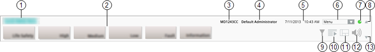

Summary Bar
The Summary bar is located along the top of the system screen, and is the main point of entry to all the functions of Desigo CC.
By default, it displays collapsed to a slim bar, and it has a series of indicators that provide an overview of the alarms and events in the system, grouped by category followed by the operator menu, a system integrity indicator, and the filter icon.
When the slim bar is expanded, on the left, the Summary bar displays the event lamps, grouped by category, while on the right, it has buttons for starting multiple System Manager windows, opening/closing Event List, and controlling the audio alert.
Depending on the profile it displays a specific set of event lamps, the Event Detail bar that highlights the most critical event in the system and allows you to open or close the Event List window and control the audio alert.

1 | Company logo | When you move your cursor on the logo, a tooltip tells you: |
2 | Event lamps | Summarizes the events in the system, grouped by categories. You can click an event lamp, to open Event List filtered by that category. For background information, see the Event List and event lamps reference sections. |
3 | Client name | Indicates the computer name on a server, client, or FEP station. |
4 | Logged user | Indicates the full name of the person logged onto the system. It also provides a tooltip with the user’s most important information (for example, full name, account name, language, and so on). If the user's full name is not available, |
5 | Date and time |
|
6 | System menu | From here, the operator can access other functions. For background information, see the reference section. |
7 | System integrity indicator | Displays the status of the network connection to the server. For background information, see the reference section. |
8 | Expand/collapse | Expands or collapses the Summary bar. For instructions, see Expand or Collapse the Summary Bar. |
9 | Event filter | Lets you filter the events in Event List. For instructions, see Filtering Event List. |
10 | Open/close Event List | Shows/hides or expands/collapses the Event List window. For instructions, see Open Event List. This icon is disabled during Investigative/Assisted Treatment. |
11 | Start a new System Manager | Click to open multiple System Manager windows. For instructions, see Handle Additional System Manager Windows. |
12 | Audio Alert | Click to silence/unsilence the sound emitted by the management station to notify you of events. For instructions, see the reference section. |
13 | Show/hide Event Detail bar | Shows/hides the Event Detail bar (available only in some configurations). For instructions, see Show or Hide the Event Detail Bar. Depending on the Client Profile this icon may or may not be available. |